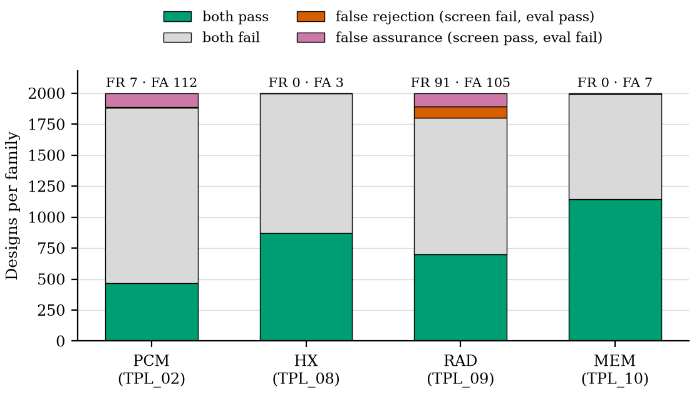
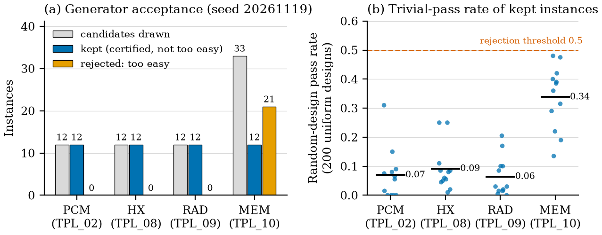
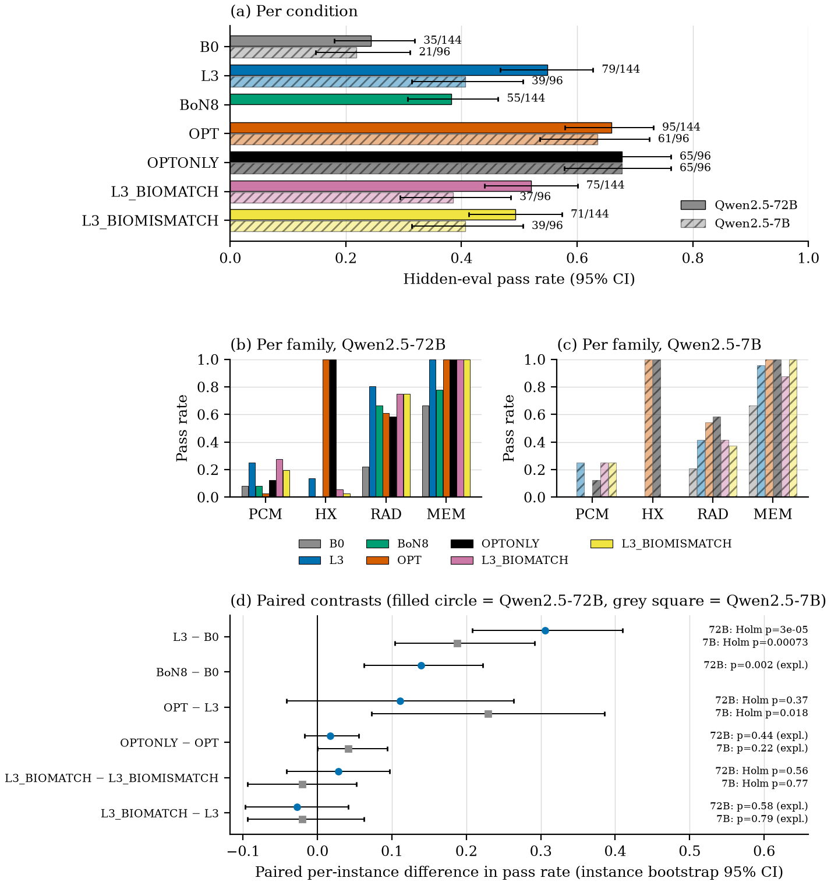

docs/v10/e0_results/e0_nontrivial.json.Revised research proposal (FLBDS V10). Supersedes “Physics-Verified Bio-Inspired Concept Generation from Biological Images”.
20 November 2026
The original proposal asked whether typed TRIZ-style operators and a biological source add value to a large language model (LLM) that proposes thermal, fluid and porous-media (TFP) designs checked by hand-written physics code. Its motivating pilot reported that feeding back physics-check failures roughly doubled the pass rate of Qwen2.5-72B on 12 hand-authored development cases (18/60 to 34/60). This revision reports an audit of that system and a re-design. The audit found twelve defects, including two routes by which the hidden list of acceptable templates reached the model, schema defaults that filled omitted design fields, and a case scored against a specification its own reference design fails. Rescoring the stored runs shows that a design containing nothing but the template identifier passes the hidden scorer on 5 of the 12 cases; on the 7 remaining cases feedback adds +2.9 points (11/35 vs 12/35; sign-flip p = 1.0). The pilot gain was therefore an artefact of template selection on trivially passable cases. We then built V10: a sealed generator of 48 solver-certified, non-trivial instances in four families; a screen that returns per-constraint margins and never sees the answer; a single hidden-scorer submission per run; and a classical optimiser arm. A pilot with Qwen2.5-72B (48 instances × 3 seeds, GPU), with Qwen2.5-7B (2 seeds, CPU) as a scale contrast, gives four findings. Screen feedback helps (+30.6 points over a single shot at 72B, Holm p = 3×10⁻⁵; +18.8 at 7B). Seeding a classical optimiser with the LLM's design adds a further +11.1 points at 72B (not significant, Holm p = 0.37) and +22.9 at 7B (Holm p = 0.018): the optimiser matters more when the LLM is weaker. The same optimiser told the correct template and given no LLM at all does as well as either model (65/96, against 95/144 for the 72B LLM-seeded arm; paired difference +1.7 points, p = 0.44). A matched biology card shows no effect (+2.8 points over a mismatched card at 72B, Holm p = 0.56). The optimiser also exposes that the screen is not a relaxation of the scorer: it passes every design on the screen, but 31 of 96 (no LLM) and 49 of 144 (72B-seeded) fail the hidden scorer. We conclude that once the template is given these problems are parameter-fitting problems that do not need an LLM. The research question therefore moves to mechanism and template choice on choice-sensitive instances, which only an LLM or a biological source could inform. The paper states five preregisterable research questions, the methodology to answer them, and a plan to April 2027.
Keywords: bio-inspired design; LLM; verifier feedback; benchmark leakage; parametric benchmark generation; multi-fidelity verification; preregistration.
Status labels. Throughout, measured marks a number computed from stored results tonight or earlier; planned marks work that has not been run. Every number in this paper is taken from the project's result files, the V10 findings log, or the literature notes named in Appendix B. “Physics-verified” is used only in the narrow sense of passes hand-written lumped and 1-D TFP code checks within declared validity regimes; it is code verification, not validation against experiment [34].
Bio-inspired design (BID) transfers a mechanism observed in an organism to an engineering problem. LLMs have made it cheap to propose such transfers, and recent systems report more and more novel ideas. They do not report whether those ideas work. BioSpark, the best-evidenced LLM BID system, raised expert-rated novelty but lowered rated feasibility (5.7 vs 6.8) [1], and Zhu et al. name “infeasible numbers from the engineering perspective” as a core failure of GPT-based BID [2]. None of the LLM BID systems surveyed for this proposal checks physics before accepting a concept [1–4]. A physics check matters for two reasons. It is the only cheap way to reject transfers that look right but cannot work at the target scale: the dimensionless group that makes an organism's mechanism work often changes regime at engineering scale [35–37]. It also gives a gradable outcome, so that claims about what helps generation can be tested rather than rated.
The original proposal (19 pages; referred to as V9) had two goals: a visual biology-to-engineering thesaurus of SAPPhIRE-style mechanism cards, and a concept generator producing 3–5 physics-verified concepts. It defined two modes. Mode A took a biological image plus a problem; Mode B took a biological image alone and selected a problem. The pipeline had eight modules: M1 biology grounding (BioCLIP, VLM tagger, retrieval, extractor), M2 problem-card extraction, M3 knowledge graph, M4 analogy and transformation engine (role binder, conflict detector, operators T1–T5), M5 physics verifier (a lumped screen in the loop and a coupled evaluator for hidden scoring), M6 novelty gate, M7 outputs (SVG, CAD, sketches) and M8 user interface. It asked four research questions: do operators plus an in-loop physics check beat simpler methods (RQ1); does the biological source help compared with a mismatched or missing one (RQ2); does function-based search beat text search (RQ3); and can Mode B pick and solve a suitable problem (RQ4). Its key pilot observation was an “attribution gap”: plain prompting passed 17/60 runs (28.3%), and feeding back evaluator failures raised this to 33/60 (55.0%) “with no biology and no operators”, while in 0 of 8 reviewed transcripts did the model change mechanism.
Between the proposal and today the project ran Rounds 9–11 on the 12 development cases, and tonight it audited them. The audit (Section 3) shows that the pilot's central number was produced by a measurement apparatus that leaked the answer and rewarded empty designs. That changes the proposal in three ways. First, the benchmark is replaced: twelve hand-tuned cases cannot support any claim, so instances are now generated parametrically and certified satisfiable by an optimiser against the hidden scorer. Second, the architecture is cut to the parts with evidence: an LLM proposer, a physics screen with numeric feedback, a hidden scorer and a classical optimiser. Operators, the knowledge graph, Mode B, the image front end and the output modules are dropped or deferred behind explicit gates. Third, the research questions are rewritten. The pilot on certified instances shows that an optimiser that knows the correct template needs no LLM, so the question that remains open is whether an LLM, with or without biology, chooses the right mechanism. Table 1 summarises the changes.
Table 1. Original proposal elements and their status in this revision.
| Original element | Status in V10 | Reason (section) |
|---|---|---|
| Pilot claim: feedback raises pass rate 28% → 55% | Withdrawn | Explained by template selection on blank-passable cases (§3.3–3.4) |
| 12 dev cases + 36 hand-authored test cases | Dev frozen as regression set; test replaced by sealed generator | Leakage, post-hoc edits, 4 clusters cannot reach p < 0.05 (§3, §7.1) |
| M4 operators T1–T5, conflict detector | Dropped; regime check folded into screen | Fired on 2/12 cases; B3 30/60 < screen loop 34/60 (§3.1, §4) |
| RQ1 (operators + check vs simpler) | Replaced by RQ1 (feedback) and RQ2 (optimiser and choice) | Operators have no route to an effect (§6) |
| RQ2 (does biology help) | Kept as RQ3, moved to choice-sensitive instances | Only template choice is left for biology to influence (§6) |
| RQ3 function search, RQ4 Mode B | Out of scope | No retrieval or Mode B exists; no preliminary evidence (§4) |
| Title promise “from biological images” | Image path deferred behind a gate | No image path exists; VLM mechanism claims unreliable (§2.7, §5.9) |
| “Physics-verified” | Narrowed to code verification within declared regimes | No template has a validation data set (§10) |
flbds/v10/; 45 test cases (24 test functions with parametrisation) reported passing on the server.BioSpark expands a seed set of AskNature mechanisms with GPT-4 across a tree of life and offers designers short transfer prompts (“Sparks”), trade-off tables and question answering. In a within-subjects study with 12 participants it beat an AskNature-plus-ChatGPT baseline on expert-rated quality (6.5 vs 4.5) but lowered rated feasibility (5.7 vs 6.8). Its clustering feature was rated least useful (4.1 of 7) [1]. Zhu, Zhang and Luo fine-tuned GPT-3 generators and relevance evaluators for BID. Over half of their retrieved analogies for a flying car were birds, which they read as surface-similarity retrieval, and they report infeasible numbers [2]. AskNatureGPT [3] and NASA's BIDARA with retrieval [4] report feasibility or quality gains, mostly without numbers that could be checked. Across this literature, every component with a reported gain is either retrieval of real examples or a cheap LLM transfer prompt. No system reports a verifiable engineering outcome, so no published result tells us which component improves verified designs. LLM-generated design ideas are also measurably less diverse than human ones [38].
Published TRIZ-plus-LLM systems are small case studies without a plain-LLM baseline. AutoTRIZ matched or half-matched the textbook analysis on 7 of 10 cases and states that there is no objective mechanism to evaluate its solutions [5]. TRIZ Agents studied one gantry-crane case at 150k–250k tokens per run [6]. The one benchmark, TRIZBench, finds that TRIZ structure helps principle prediction, a classification task, not design quality [7]. The original proposal's operators were a deterministic graph-rewrite form of this idea; neither the literature nor the project's own data (Section 3) supports them.
Intrinsic self-correction does not reliably help. Huang et al. found it lowered GSM8K accuracy (Llama-2 from 62.0% to 36.5%), while oracle correctness labels raised it, so the bottleneck is judging correctness rather than producing fixes [8]. Kamoi et al.'s survey concludes that self-correction works where reliable external feedback exists, that no prior work shows success with feedback from prompted LLMs on general tasks, and that many positive results came from evaluations that used information unavailable at deployment [9]. Olausson et al. show that at matched compute, self-repair gains are modest and that budget is better spent on a diverse set of initial samples [10]. Self-Debug shows repair pays when feedback is informative, such as unit tests [50]. In simulator-grounded design, SciDesignBench's 520 tasks, which include heat exchangers and reactors, show feedback doubling to tripling single-shot success before plateauing at about 67–76% for frontier models; giving the model a starting design lowered scores for all seven models [11]. Eureka [12] and AlphaEvolve [13] keep a population with score-based selection and an evaluation cascade from cheap to expensive checks. With an automatic verifier, coverage from repeated sampling grows roughly log-linearly and turns directly into accuracy [14].
The evidence consistently favours hybrids in which the LLM supplies structure and a classical optimiser fits numbers. In a 2026 hyperparameter benchmark, pure-LLM agents lost to TPE and CMA-ES, while a hybrid in which a 0.8B LLM proposed 30% of CMA-ES trials beat every classical and pure-LLM method; giving the LLM 80% of trials collapsed performance [15]. LLM-SR has the LLM propose equation skeletons and fits constants with BFGS [16]. ADO-LLM uses LLM starting points inside Bayesian optimisation for analog circuits [17]. In constrained inverse design, a BoTorch baseline reached the ceiling where the best LLM did not [18]. No published study compares LLM float-tuning against LLM-choice-plus-optimiser on lumped thermal design; Section 8 provides a first, small one.
A cheap screen is safe to use for feedback only if it is a necessary condition of the expensive scorer, so that screen failure implies scorer failure; in the multi-fidelity taxonomy of Peherstorfer et al. the screen is a filter [19]. Feedback loops drive models to optimise the proxy rather than the target (“in-context reward hacking”), and the effect is not removed by prompting or scale [25]. Frontier models exploit scorer bugs and reference answers when they can reach them [26]. Scientific code without test oracles is best checked with metamorphic and property tests [33]. LLM agents can now make finite-element and CAE code run, but “runs” overstates “physically correct” by about 20 points [45], and repeated-trial consistency is well below best-of-k [44]; we therefore keep templates and scorers hand-written.
Miller's guidance for evaluations is that the independent question is the unit of inference, that clustered standard errors can exceed naive ones by more than three times, and that more questions beat more resamples [20]. Bowyer et al. show that CLT intervals badly underestimate uncertainty below a few hundred items and recommend Wilson or Beta-Bernoulli intervals [21]; Card et al. show most NLP comparisons are underpowered [39]. Templated generation scales the number of instances, as in GSM-Symbolic [30], but a 2026 re-analysis showed that GSM-Symbolic's own sampling distribution confounded its comparison [31], so the sampling specification must be fixed before the test seed is drawn. EngDesign scores engineering design by executable checks and reports the fraction of tasks passed in all trials as a robustness ratio [32].
For species identification a specialist encoder dominates. BioCLIP 2 reaches 55.6% mean zero-shot top-1 over ten species benchmarks and is MIT-licensed [22]; a general VLM such as Qwen2.5-VL-7B is far weaker on open-vocabulary naming, and its best use is re-ranking a specialist's top-5 [49]. VLMs follow leading hints [23], and open models score about 47–50% on expert microscopy questions, with half of errors being perception errors [24]. A VLM should therefore never be asked for the mechanism, and its prompt must not contain the hypothesised taxon.
What existed at the end of Round 11 was much smaller than the proposal. Ten hand-written TFP templates (TPL_01–TPL_10), each with a lumped screen_* and a coupled eval_* function, totalled 2,442 lines in flbds/physics/. There were 12 hand-authored dev cases (four mechanism clusters × three splits), a runner in which Qwen2.5-72B-FP8 proposed typed parameters, and a skeleton of the M4 operator layer. The biology path did not exist: no image path, no retrieval, no gold cards, no test set and no Mode B. The “biological source” in every full-pipeline (B3) run was one of four hand-written fixture cards. The Round 11 ledger (60 runs per condition: 12 cases × 5 seeds, T = 0.7) was B0 self-critique 18/60 (30.0%, Wilson 19.9–42.5), screen-feedback loop 34/60 (56.7%, 44.1–68.4), coupled-oracle feedback 33/60 (55.0%) and B3 with operators 30/60 (50.0%). Operator T1 fired on 2 of 12 cases and no other operator fired. On those two cases B3 scored 6/10 against 9/10 for the plain screen loop. The rewritten graph an operator produced was never shown to the model.
Table 2 lists the defects found by reading code and data. Several are classic test-leakage and reward-hacking patterns [9, 25, 26].
Table 2. Defects in the V9 measurement apparatus. Paths are relative to the repository root; runner11 is scripts/run_round11_benchmarks.py.
| # | Defect | Location | Effect |
|---|---|---|---|
| 1 | B3 prompt's “Target Verifier Template” read from hidden ground truth when no operator fires | runner11:713 | B3 used the ground-truth template in 50/60 runs; explains “100% template preservation” |
| 2 | Screen checks membership in gt.acceptable_templates and echoes the list as feedback | flbds/physics/screen.py:21, 62–74 | 7/60 Screen and 7/60 Oracle runs saw the list; 6 of each then passed |
| 3 | Scorer specs in a second hard-coded table overwrite model fields before screen and eval | runner11:72–85, :99–109 | Model-chosen values silently replaced |
| 4 | DEV-M4-S1 scored at 10.0 m head; card and reference design say 2.5 m | runner11:82 | Case unsatisfiable as scored (2.4 µm pore breaks through near 4.2 m) |
| 5 | Pydantic defaults fill omitted design variables | flbds/schema/templates.py:165–187 | A three-field B3 output on DEV-M3-S1 passed |
| 6 | Screen invents caps when the card is silent | screen.py:77–84, 136, 140, 155 | Limits nobody stated are checked |
| 7 | Case-specific hack in shared code (charge_h = 4.86 for DEV-M1-S3) | flbds/physics/capacity_bound.py:131 | Gate tuned to one case |
| 8 | Laplace breakthrough uses abs(cos θ) | tpl10_diffusion.py:149, screen.py:193 | Hydrophilic pores treated as hydrophobic in both tiers |
| 9 | Screen and eval share helpers | tpl08_countercurrent.py:52, 171; tpl06_porous_flow.py:14, 49, 88 | Tier agreement is not independent evidence |
| 10 | Screen is not a relaxation of the eval | screen.py:142–151 | B3 screen-pass 25/60 < eval-pass 30/60 |
| 11 | 32/60 B3 first turns malformed; prompt never shows field names; union schema; 4,096-token context | runner11:745–768, 312–314, 335 | B3 spent its first of three turns on format errors |
| 12 | Agent-written transcript review reports parameters absent from the raw JSON | docs/audit/b3_round11_transcript_review.md:40–50, 109 | “Operator T1 proved causally effective” is unsupported |
E0 rescored all 240 stored Round 11 runs (B0, Screen, Oracle, B3; 60 each) on CPU with the scorer fixes that can be applied after the fact: the DEV-M4-S1 head set to the card's 2.5 m and the contact-angle sign corrected measured. These fixes change no outcome: 18/34/33/30 of 60 for B0/Screen/Oracle/B3, as before. Two further facts emerged. Every stored pass relied on at least one designer field filled by a schema default (59–60 of 60 runs per condition omitted at least one such field), so a strict no-defaults rule would give zero passes in every condition. And B3 took its template from hidden ground truth in 50 of 60 runs.
docs/v10/e0_results/e0_nontrivial.json.To ask what the loop was actually achieving, we submitted to the hidden scorer a design containing only template_id, with every other field left to schema defaults and the environment taken from the scorer's own table. This blank design passes on 5 of the 12 dev cases (DEV-M2-S1, M2-S2, M3-S1, M3-S2, M3-S3) measured. On these 5 cases, passing requires only naming the right template, and feedback that names the acceptable templates supplies exactly that. Figure 1 shows the consequence. On the trivially passable cases B0 passes 7/25 while Screen, Oracle and B3 pass 22/25, 22/25 and 23/25. On the 7 non-trivial cases B0 passes 11/35, Screen 12/35, Oracle 11/35 and B3 7/35. The Screen − B0 difference is +2.9 points (per-case sign-flip p = 1.0, n = 7 cases) and B3 − Screen is −14.3 points (p = 0.25). Across all 12 cases, Screen − B0 is +26.7 points but even then not significant (p = 0.080 over cases, 0.25 over the four clusters). The Round 11 claim that the feedback loop doubles the pass rate is explained by template selection on cases a blank design already passes. There is no measured physical-design benefit on the dev cases.
The V10 families (Section 5) wrap the same templates with an explicit per-constraint screen and the existing hidden evaluator. A screen is safe for feedback only if screen failure implies scorer failure [19]. We tested this on 2,000 designs per family: half uniform over the design space and half Gaussian perturbations (σ = 0.15 in the unit cube) of the certified designs, to populate the feasibility boundary measured. Figure 2 shows the result. HX and MEM are close to relaxations: zero false rejections, and 3 and 7 false assurances. PCM has 7 false rejections and 112 false assurances; all 112 are designs that violate a paraffin latent-capacity bound the hidden eval enforces and the screen lacks. RAD is worse and qualitatively different, with 91 false rejections and 105 false assurances: the existing TPL_09 hidden eval checks inner heat leakage but not the required net cooling, while the screen checks cooling but not leakage, so the two tiers test different constraints and neither is a relaxation of the other.

flbds/v10/relaxation_audit.json.Two bugs in the existing physics layer were found tonight. (i) The TPL_02 one-dimensional enthalpy (Stefan) solver is explicit, uses 100 mesh cells with a 30,000-step clamp and a mesh floor of 10, and therefore violates its own stability condition when the effective Fourier number α·t/d² exceeds 0.45 × 30,000 / 10² = 135. It then returns NaN or garbage that can still pass. About 31% of uniformly random PCM designs fall in this region. V10 wraps it with a “model validity” constraint Fo ≤ 135 in both screen and hidden eval; flbds/physics itself is not yet patched. (ii) The TPL_09 hidden eval ignores the required net cooling, as described above. Both bugs would have let a loop that optimises against the scorer report passes that are physically meaningless.
The decisions follow one rule: keep a module only if a measurement or a strong literature result says it pays for itself, and defer everything else behind an experiment that would justify building it. Figure 3 contrasts the two pipelines; Table 3 records each decision.
Table 3. Module-by-module decisions. Evidence pointers refer to sections of this paper or to references.
| V9 module | Decision | Rationale | Evidence |
|---|---|---|---|
| G1 visual thesaurus | Defer | No downstream gain shown anywhere; useful only as provenance and navigation, which no hypothesis needs. | [1], §2.1 |
| M1 bio grounding (image → cards) | Defer behind RQ3 gate | Unbuilt; the photo is not the bottleneck; if built, a thin closed-list path only. | §5.9, [22–24] |
| M2 problem-card extractor | Replace | The parametric generator produces cards and renders template-free text. | §5, §7.1 |
| Mode B selector and pool | Drop | Not implemented; depends on M1 and M3; no preliminary evidence. | §1.2 |
| M3 graph, 3-head encoder, Leiden, reranker | Drop | Proposal's own pilot: cross- vs within-domain cosine 0.764 vs 0.775; KGs validated only by single cases. | [1, 2], §2.1 |
| M4 role binder | Drop | Never called (defined but unused in runner11:697). | §3.1 |
| M4 conflict detector | Simplify into regime check | The deterministic, physically grounded part survives as validity regimes. | §5.6, [35–37] |
| M4 operators T1–T5 | Drop | Fired on 2/12 cases; B3 30/60 < screen 34/60; no literature support for TRIZ guidance improving verified designs. | §3.1, [5–7] |
| LLM parameter proposer | Keep, simplify | Single JSON object per turn, all fields required and bounded, strict parsing, one free re-sample on parse failure. | §5.3, [28, 29] |
| Numeric optimiser | Add | Fixes the dominant numeric failures; also a certificate and an oracle-template baseline. | §8, [15–18] |
| M5-Screen | Keep, rewrite | Only component with a plausible measured gain; must lose ground-truth access and become a relaxation. | §3.5, [19] |
| M5-Eval | Keep, harden | Card-only specs, abs(cos) fix, Fo validity wrap, independent implementation still to do. | §3.6, [34] |
| Capacity-bound gate | Replace | Case-specific hack replaced by an optimiser certificate per instance. | Table 2 #7 |
| M6 novelty gate | Defer | LLM-judge agreement is metric-dependent and weak for feasibility. | [46] |
| M7 outputs, M8 UI | Defer / drop | No hypothesis depends on them; output a parameter table and text. | — |
| Silver-card factory | Freeze | About 13% yield; 51 of 53 bio cards describe materials, not organisms; unused by any condition. | §1.2 |
| B4 DPO proposer | Replace with GRPO on screen reward, deferred | RL from simulator reward gave +11 to +17 points on 7–8B models. | [11, 27] |
| Human evaluation (3 packets) | Narrow | Binary verifier audit with two raters is feasible; agent-written reviews never count as evidence. | Table 2 #12 |
V10 separates two jobs that V9 merged: choosing which physical mechanism and template to use, and finding parameter values that satisfy the physics. Figure 4 shows the generation–verification loop as implemented in flbds/v10/runner.py. For each run (one instance × one seed), the LLM receives a template-free problem statement and the catalogue of all ten templates. It returns one JSON object containing a short rationale, a template identifier and a flat design. A condition draws N samples; each is screened. If the screen fails and repair turns remain, the model sees its last attempt, the screen's per-constraint table and the top-2 designs so far, and tries again. In the optimiser arm, the LLM's first design seeds a differential-evolution search against the screen. Selection across samples and turns uses only the screen. Exactly one final design per run goes to the hidden evaluator, once.
Four families mirror the four dev clusters so that dev results remain interpretable (Table 4). Each family declares an environment space (sampled per instance and never taken from model output), a design space of bounded continuous parameters (log-uniform where the range spans decades), fixed documented constants, a screen and a hidden evaluator. Every field of the existing Pydantic parameter class is set explicitly, so no schema default can enter a design.
Table 4. The four V10 families (from flbds/v10/families.py).
| Family | Template | Dev cluster | Environment (sampled) | Design variables | Hidden-eval checks |
|---|---|---|---|---|---|
| F_PCM | TPL_02 phase-change storage | DEV-M1 | heat flux, charge hours, required energy, thickness cap, mass cap, superheat limit (6) | thickness, k_eff, matrix fraction, matrix ρ and cp, PCM ρ, latent heat, cp (8) | paraffin capacity bound, mass, thickness, Fo ≤ 135, 1-D Stefan superheat and melt depth |
| F_HX | TPL_08 countercurrent exchanger (circular duct, water) | DEV-M2 | duty, cold and hot inlet T, ΔP cap, length cap (5) | two mass flows, U, area, length, hydraulic diameter, wall k, wall section (8) | length, duty after axial-conduction degradation, pressure drop |
| F_RAD | TPL_09 radiative cooling | DEV-M3 | solar, ambient, sky and inner T, hconv, leakage cap, required cooling, thickness and mass caps (9) | emissivity, solar absorptivity, substrate thickness, k, ρ (5) | thickness, mass, inner leakage (net cooling not checked; §3.6) |
| F_MEM | TPL_10 plastron membrane gas diffusion | DEV-M4 | required flux, minimum pore size, hydrostatic head, Δc (4) | thickness, porosity, pore diameter, tortuosity, contact angle (5) | pore size, capillary breakthrough head, coupled flux |
Prompts are chat messages, so vLLM and HF transformers back-ends see identical conversations. Each turn is a single call whose output must be one JSON object: {"rationale", "template_id", "design"}. The planned two-call pattern (free-text reasoning, then a constrained choice, then a schema-constrained design) [28, 29, 48] is not implemented: the CPU back-end has no constrained decoding, and for parity the vLLM adapter does not use it either. Parsing is strict. A missing, non-numeric, non-finite or out-of-bounds design field is a schema failure; nothing is clamped or defaulted. An unparseable output gets one free re-sample that does not consume a repair turn. Environment values and limits are fixed by the problem and must not be emitted. Appendix A gives the exact instruction and feedback text.
The screen returns, for every constraint of the family, the achieved value, the stated limit, a signed normalised margin and PASS/MISS. For an upper limit the margin is (limit − achieved)/scale, and for a lower limit (achieved − required)/scale, with scale = |limit| unless a family sets it; a margin ≥ 0 means satisfied. Solver exceptions and non-finite values receive a floor margin of −10. Feedback is rendered as a small table (Appendix A) with the attempt's design and its minimum margin. A wrong template receives only the fixed sentence in Figure 4; the screen never names templates, never shows the acceptable set and never reports hidden-eval values. The fixed template-derived sensitivity hints proposed in the architecture report (for example, “superheat falls with k_eff”) are not implemented.
The firewall is enforced by data flow and tests, not by convention. The instance's template_id is a scorer-only field: prompts.py renders the problem statement, the catalogue and, optionally, a biology card, and a runner test asserts that template-error feedback is non-leaky. The hidden evaluator is called only in runner.hidden_score, once per run, after selection. The optimiser arm refuses any objective other than the screen (use != "screen" raises). Two leaks remain and are listed in Section 10: the catalogue shows numeric bounds only for the four live templates, and some HX system names contain the word “countercurrent”. Two planned controls are not yet in code: an import-graph test that only the scorer may read ground truth, and a regex scan of every prompt and feedback string for template identifiers and hidden values.
Each template should declare the dimensionless groups within which its model is valid, and both tiers should refuse to score outside them (verdict invalid_regime). This is also the deterministic form of the “looks alike ≠ works alike” check the operators were meant to provide: riblets reduce drag only near s+ ≈ 10–20 wall units and increase it beyond [36], termite-mound ventilation is driven by diurnal thermal oscillation rather than wind [37], and pad-based adhesion does not scale beyond gecko size [35]. So far one regime is implemented, the PCM solver's Fo ≤ 135 (§3.6). Others proposed in the architecture report (Bi < 0.1 for fins, laminar Re for TPL_08, θ > 90° and a Knudsen window for TPL_10, a Stefan-number window for TPL_02) are planned.
optimise_from maximises the minimum normalised screen margin with SciPy differential evolution in the unit cube (30 iterations, population 10 × dimension, seeded Latin hypercube, L-BFGS-B polish). In condition OPT the LLM's design is clipped to bounds and inserted as the first member of the initial population; if the LLM chose the wrong template the optimiser is not run and the run fails. In OPTONLY there is no LLM: the optimiser starts from a random population on the instance's own family, so it is an oracle-template baseline. The optimiser never sees the hidden evaluator.
A biology card is a short text block (organism, mechanism, structure, physical effect, biological function) appended to the prompt. In the current code the cards are the four V9 dev fixtures (flbds/m4/fixtures.py), one per cluster. “Mismatch” rotates deterministically to the next family's card. The matched PCM card is a weak test: it describes an elephant's mud-wallowing, i.e. evaporative cooling, rather than latent-heat storage. The plan replaces fixtures with 16 hand-written gold cards from PMC open-access primary papers, with AskNature used only as a manual pointer because its terms forbid automated mining [40, 41].
If built, the image front end would be deliberately thin: BioCLIP 2 zero-shot over a closed candidate list with abstention [22], optional VLM re-ranking of its top-5 [49], taxon-keyed retrieval from PMC open access with an off-the-shelf embedder such as Qwen3-Embedding [43], and the existing extractor with a verbatim-span check and a ChatExtract-style value-verification turn [42]. The VLM would never be asked for the mechanism. The gate is RQ3 (Section 6): M1 is built for performance only if a matched gold card beats a mismatched card by at least 10 points on choice-sensitive instances. If RQ3 is null, biology is reported as supplying explanation and provenance, not performance, and the image path stays future work.
The pilot (Section 8) reshaped these questions. On the current families, once the template is known, a classical optimiser on the screen needs no LLM. The LLM, and any biological source, can therefore matter only through the choice of mechanism. RQ1 and RQ5 concern the measurement apparatus and the loop; RQ2 and RQ3 concern choice; RQ4 concerns compute. The smallest effect of interest is 10 points throughout. The unit of inference is the instance, with seeds averaged within instance. Confirmatory tests use a paired exact (or Monte-Carlo) sign-flip permutation test with Holm correction across RQ1–RQ3 only.
RQ1 — Verifier feedback. Does screen feedback improve the hidden-verified pass rate on certified non-trivial instances compared with a single shot?
Hypothesis H1: L3 (one sample, ≤ 3 screen repairs) > B0 (one sample, no feedback). Primary metric: per-instance hidden-eval pass fraction. Test: paired sign-flip; bootstrap CI over instances. Go/no-go: go if Holm-adjusted p < 0.01 and the CI lower bound exceeds +10 points; otherwise the headline claim fails and is reported as such. Pilot (not preregistered): 72B +30.6 points, CI [+20.8, +41.0], Holm p = 3×10⁻⁵; 7B +18.8 points, CI [+10.4, +29.2], Holm p = 0.0007. Preregistration note: analysed on the choice-sensitive test set with Qwen2.5-72B; the pilot sets variance inputs only.
RQ2 — Choice versus numbers. When the template must be chosen, does LLM template choice followed by a classical optimiser beat (a) LLM-only repair at matched tokens and (b) a no-LLM optimiser that enumerates every template and keeps the best screen margin (OPT-ENUM), and how far is it from the oracle-template bound (OPTONLY)?
Hypotheses: H2a OPT > L3; H2b OPT > OPT-ENUM. Primary metric: hidden-eval pass fraction; secondary: feasible-template-choice rate. Test: paired sign-flip, Holm. Go/no-go: if OPT-ENUM is within 5 points of OPT, the LLM contributes no measurable choice value on that benchmark and the claim is restricted to admissibility constraints stated only in text. Pilot: OPT − L3 = +11.1 points at 72B (CI [−4.2, +26.4], Holm p = 0.37) and +22.9 at 7B (Holm p = 0.018); OPTONLY − OPT = +1.7 (72B, p = 0.44) and +4.2 (7B, p = 0.22). On single-template families the LLM adds nothing over the oracle optimiser. Preregistration note: OPT-ENUM is new code; with ten templates and millisecond screens, enumeration is cheap, so it is the honest no-LLM baseline.
RQ3 — Biology. On choice-sensitive instances, does a matched biological mechanism card raise the feasible-template-choice rate and the hidden-eval pass rate compared with a mechanism-mismatched card, and is “no card” equivalent within ±10 points?
Hypothesis H3: Bio > WrongBio. Primary metric: feasible-template-choice rate on the first turn; secondary: pass rate in the LLM-only and OPT arms. Test: paired sign-flip, Holm; NoBio vs Bio by two one-sided tests at ±10 points. Go/no-go: build M1 only if Bio − WrongBio ≥ +10 points and significant; otherwise narrow the biology claim to explanation and provenance. Pilot: at 72B, L3_BIOMATCH − L3_BIOMISMATCH = +2.8 points (CI [−4.2, +9.7], Holm p = 0.56) and L3_BIOMATCH − L3 = −2.8 (p = 0.58); at 7B, L3_BIOMATCH − L3 = −2.1 (p = 0.79), with the mismatch arm incomplete. Preregistration note: requires 16 hand-written gold cards and a WrongBio pairing table fixed before the seed is drawn.
RQ4 — Compute allocation. At matched generated tokens, is it better to spend budget on more independent samples or on deeper repair (24 × 1, 8 × 3, 3 × 8 samples × turns)?
Hypothesis H4 (secondary): 8 × 3 is within 5 points of the best, following [10, 11]. Metric: pass rate and pass@k against tokens. Decision: adopt the cheapest allocation within 5 points of the best. Pilot: at 72B, best-of-8 without feedback (BoN8) passes 55/144 against 79/144 for one sample with three repairs (L3), at about 2.8× the tokens per run (1,084 vs 384). Conditions A24x1, A8x3 and A3x8 exist in runner.py and are running at 72B.
RQ5 — Screen–scorer fidelity. How often does the screen pass designs the scorer fails (false assurance), and fail designs the scorer passes (false rejection), on sampled designs and on the designs each condition actually submits?
Hypothesis H5 (gate): after the rewrite, false rejection = 0 in 104 designs per template. Metric: 2 × 2 agreement table per family; screen-pass − eval-pass per condition; fraction of passes with a parameter at a bound. Decision: no confirmatory run starts until H5 holds. Pilot: audit FR 7/0/91/0 and FA 112/3/105/7 (PCM/HX/RAD/MEM); OPTONLY passes the screen 96/96 and the hidden eval 65/96; the 72B-seeded OPT arm passes the screen 144/144 and the hidden eval 95/144.
Figure 5 shows the generator (flbds/v10/generator.py). For each family, environment vectors are drawn from a generator seeded with (20261119, family index). For each candidate, differential evolution (40 iterations, population 15, Latin-hypercube initialisation, polish) maximises the minimum hidden-eval margin over the design space. For PCM, whose 1-D Stefan solver costs about 0.15 s per call, it optimises a closed-form surrogate and then verifies with the real evaluator. The best member and four best population members are tried against the hidden evaluator; the instance is certified if one passes. It is then rejected as too easy if more than 50% of 200 uniform random designs pass. Kept instances are rendered into a template-free problem statement using a rotating list of system names. The set is sealed by a SHA-256 over the canonical JSON plus a canary string; load_instances refuses a file whose hash does not match.
The current set has 48 instances, 12 per family (Figure 6). PCM, HX and RAD accepted 12 of 12 candidates; MEM accepted 12 of 33, rejecting 21 as too easy. The mean random-design pass rate of kept instances is 7% (PCM), 9% (HX), 6% (RAD) and 34% (MEM). No candidate was unsatisfiable. Certified minimum margins span 0.014–0.607 (PCM), 0.912–0.963 (HX), 0.580–0.979 (RAD) and 1.32–6.69 (MEM). The margin band of about 1.05–1.5× proposed in the architecture report is not enforced, so the MEM instances in particular are loose. These 48 instances are a development and pilot set: they were generated before a preregistration and have been used in the pilot, so they cannot serve as the sealed test set.

flbds/v10/instances_v10.json (metadata and per-instance trivial rates only).Choice-sensitive instances planned. In the current families each instance has exactly one feasible template, by construction. The test set will add families whose required function admits at least two plausible templates (for example sensible storage TPL_01, latent storage TPL_02 and sorption TPL_04 for thermal buffering; radiative cooling TPL_09 and fins TPL_07 for passive heat rejection; evaporative cooling TPL_03 where water is available). Each candidate is certified against every plausible template; it is kept only if at least one is certified feasible and at least one is not found feasible, preferably by a closed-form bound (first law, ε ≤ 1). Qualitative admissibility, such as “no liquid water supply”, is stated in the text and enforced by the scorer's template preconditions. At least 48 of roughly 80 test instances should be choice-sensitive.
Sample sizes follow Miller's paired formula [20] with per-case difference SDs estimated from Round 11 (0.44 for dissimilar conditions such as B0 vs a feedback loop; 0.20 for close variants, cross-condition r = 0.90), checked by a logit random-effects simulation (Table 5). The simulation, with three cases per cluster and 50% shared variance, gives 80% power for a 15-point gain at N ≈ 30–36 (α = 0.05) or N ≈ 42–54 (α = 0.01); the 12-case dev set had 21–37% power for that effect. Instances from one template are correlated, so counts are inflated by the design effect 1 + (m − 1)ρ. With about 8 instances per template, N = 80 at K = 5 seeds covers a 25-point effect at α = 0.01 for an intra-template correlation of paired differences up to about 0.2. The pilot's paired SDs and the intra-template correlation will be re-estimated from the 72B pilot, and the preregistration fixes N by re-running the simulation, capped at 120. Temperature stays at 0.7 and K at 5; more instances buy more than more seeds [20].
Table 5. Independent instances needed for 80% power (two-sided; α = 0.05 / 0.01), from the literature notes.
| Comparison type | SD of per-instance difference | δ = 15 pt | δ = 20 pt | δ = 25 pt |
|---|---|---|---|---|
| Close variants (e.g. Bio vs WrongBio) | ≈ 0.19 | 13 / 19 | 8 / 11 | 5 / 7 |
| Intermediate | ≈ 0.30 | 32 / 47 | 18 / 27 | 12 / 17 |
| Dissimilar (e.g. B0 vs loop) | ≈ 0.43 | 65 / 96 | 37 / 54 | 24 / 35 |
Sealing protocol planned: a dated PREREG.md (git SHA, hypotheses, N, K, T, analysis script, exclusion and stopping rules) is committed before the test seed is drawn; the test set is generated from a held-out seed, hashed with the canary and stored off the public repository; any later change to generator, templates, scorer or prompts requires a new preregistration version and a new seed.
Table 6. Conditions. “Code” means implemented in runner.CONDITIONS; “planned” means not yet written.
| Condition | Samples | Repairs | Optimiser | LLM | Biology | Status |
|---|---|---|---|---|---|---|
| B0 single shot | 1 | 0 | no | yes | none | code; piloted |
| L3 screen repair | 1 | 3 | no | yes | none | code; piloted |
| BoN8 best-of-8 by screen | 8 | 0 | no | yes | none | code; running |
| V10 core (8 × 3) | 8 | 3 | no | yes | none | code |
| OPT (LLM choice + seed, then DE) | 1 | 0 | yes | yes | none | code; piloted |
| OPTONLY (oracle template, no LLM) | 0 | 0 | yes | no | none | code; piloted |
| OPT-ENUM (all templates, no LLM) | 0 | 0 | yes | no | none | planned |
| L3_BIOMATCH / L3_BIOMISMATCH | 1 | 3 | no | yes | match / mismatch | code; piloted (mismatch partial) |
| OPT_BIO{MATCH, MISMATCH, NONE} | 1 | 0 | yes | yes | all three | planned |
| A24x1 / A8x3 / A3x8 | 24 / 8 / 3 | 0 / 2 / 7 | no | yes | none | code |
| B2-Code (model writes its own checks) | 1 | 3 | no | yes | none | planned (secondary) |
The stack is fixed in flbds/v10/stats.py and scripts/analyse_v10.py. (1) Primary: a two-sided paired sign-flip permutation test on per-instance mean differences, exact when there are at most 20 non-zero differences and Monte Carlo with 100,000 draws and the +1 correction otherwise. (2) Effect size: the mean paired difference with a 10,000-resample percentile bootstrap over instances, plus Wilson intervals per condition [21]. (3) Holm correction across the confirmatory pairs only. (4) Family-level robustness: the same test within each family, reported but not used for decisions. (5) Planned: a template-level permutation once at least ten templates appear in the test set (minimum two-sided p = 2/1024, which clears Holm thresholds), and a binomial GLMM pass ~ condition + (1 | instance) as a secondary model. McNemar on run pairs is not used: seeds are not independent units [20].
Implemented: template identifiers never rendered; fixed template-error sentence; strict parsing without defaults or clamping; environment only from the instance; one hidden-eval call per run after screen-only selection; optimiser restricted to the screen; hash-checked instance loading with a canary. Planned: import-graph firewall test; prompt and feedback regex scan; off-repo storage of the test set; preregistration and re-seeding rule; independent re-implementation of the hidden evaluators so that screen and eval stop sharing helpers (defect 9 is still present, because both tiers in families.py call the same flbds/physics modules).
The planned model is Qwen2.5-72B-Instruct-FP8 served by vLLM on one H200, as in all earlier rounds, plus one newer open model as a replication (proposal requirement). Tonight no GPU was usable: GPU 2 on the shared server reported a MIG “GPU requires reset” state with about 86 GB stuck, GPU 3 failed CUDA initialisation, GPUs 0 and 1 belonged to other users, and container pulls failed. The pilot was therefore run on CPU with Qwen2.5-7B-Instruct through HF transformers (bf16, 96 threads, batch ≤ 48, T = 0.7, top-p 0.9, 350 output tokens). Logged aggregate decode rates were mostly about 7–10 output tokens/s per batch; an L3 condition (96 runs) took 3,697 s and OPTONLY 6.9 s. GPU 1 later became available and the pilot was replicated with Qwen2.5-72B-Instruct-FP8 under vLLM (3 seeds, 144 runs per condition); a full 144-run condition took 19–51 s of logged wall time. OPTONLY needs no LLM and was reused from the CPU run. The GPU budget for the full plan, anchored on the Round 11 measurement of about 5 s per run (0.79 GPU-h for four 60-run conditions), is about 30–45 H200 GPU-hours with 1.5× contingency, against a quota of 90 GPU-h per week (Section 9). Certification, relaxation audits and optimiser arms run on CPU.
Summarised in Section 3: the scorer fixes change no stored outcome; the blank design passes 5 of 12 dev cases; on the 7 non-trivial cases feedback adds +2.9 points (p = 1.0) and B3 is lower still. The dev-set gain was an artefact measured.
The screen is close to a relaxation for HX and MEM and is not one for PCM (112 false assurances from a missing capacity bound) or RAD (the two tiers check different constraints) (Figure 2). The generator certifies every candidate it draws and keeps 48 instances whose random-design pass rate averages 6–9% for three families and 34% for MEM (Figure 6) measured.
Setup: the 48 development instances of §7.1; one final design per run, scored once by the hidden evaluator; T = 0.7; not preregistered. Qwen2.5-72B-Instruct-FP8 (vLLM, 3 seeds, 144 runs per condition) is the primary pilot. Qwen2.5-7B-Instruct (HF transformers on CPU, 2 seeds, 96 runs per condition) is a scale contrast; it was run first, while no GPU was usable. OPTONLY involves no LLM and is the same 96 runs in both. Numbers are from docs/v10/results_72b/analysis.md and docs/v10/results/analysis.md measured. At 7B, L3_BIOMISMATCH had completed 48 of 96 runs (PCM and HX only) at analysis time.
Table 7. Pilot per-condition results. Wilson intervals are over runs and understate uncertainty; paired tests (Table 8) use the instance as the unit. S&!E = screen pass and eval fail. “—” = not run.
| Condition | Qwen2.5-72B (144 runs) | Qwen2.5-7B (96 runs) | |||||
|---|---|---|---|---|---|---|---|
| Eval pass [Wilson 95%] | S&!E | Tmpl err | Tok/run | Eval pass [Wilson 95%] | S&!E | Tmpl err | |
| B0 | 35 (24.3%) [18.0, 31.9] | 3 | 0 | 135 | 21 (21.9%) [14.8, 31.1] | 5 | 32 |
| L3 | 79 (54.9%) [46.7, 62.8] | 9 | 0 | 384 | 39 (40.6%) [31.3, 50.6] | 9 | 0 |
| BoN8 | 55 (38.2%) [30.7, 46.3] | 7 | 0 | 1,084 | — | ||
| OPT | 95 (66.0%) [57.9, 73.2] | 49 | 0 | 135 | 61 (63.5%) [53.6, 72.5] | 9 | 26 |
| OPTONLY (no LLM; 96 runs) | 65 (67.7%) [57.8, 76.2] | 31 | 0 | 0 | same runs | ||
| L3_BIOMATCH | 75 (52.1%) [44.0, 60.1] | 9 | 0 | 372 | 37 (38.5%) [29.4, 48.5] | 9 | 1 |
| L3_BIOMISMATCH | 71 (49.3%) [41.3, 57.4] | 8 | 0 | 383 | 6/48 (partial) | 0 | 4 |
Table 8. Paired instance-level comparisons (N = 48 instances; per-instance pass fraction over seeds; two-sided sign-flip test; 95% bootstrap CI over instances). Holm correction across the three confirmatory pairs only, per model.
| A − B | 72B diff [95% CI] | 72B p (Holm) | 7B diff [95% CI] | 7B p (Holm) |
|---|---|---|---|---|
| L3 − B0 (confirmatory) | +0.306 [+0.208, +0.410] | 1×10⁻⁵ (3×10⁻⁵) | +0.188 [+0.104, +0.292] | 0.00024 (0.0007) |
| OPT − L3 (confirmatory) | +0.111 [−0.042, +0.264] | 0.19 (0.37) | +0.229 [+0.073, +0.385] | 0.0088 (0.018) |
| L3_BIOMATCH − L3_BIOMISMATCH (confirmatory) | +0.028 [−0.042, +0.097] | 0.56 (0.56) | 0.000 [−0.083, +0.083], N = 24 | 1 (1) |
| BoN8 − B0 (exploratory) | +0.139 [+0.062, +0.222] | 0.002 | — | — |
| OPTONLY − OPT (exploratory) | +0.017 [−0.017, +0.056] | 0.44 | +0.042 [0.000, +0.094] | 0.22 |
| L3_BIOMATCH − L3 (exploratory) | −0.028 [−0.097, +0.042] | 0.58 | −0.021 [−0.094, +0.062] | 0.79 |

make_figures.py from docs/v10/results_72b/ and docs/v10/results/.Feedback helps on certified instances. Unlike the dev set, screen repair beats a single shot by +30.6 points at 72B (Holm p = 3×10⁻⁵) and +18.8 at 7B (Holm p = 0.0007); both CIs exclude +10 points. At 72B the gain is +58.3 points on RAD (p = 0.002 within family), +33.3 on MEM, +16.7 on PCM and +13.9 on HX. Part of the 7B gain is template correction: 7B B0 ends with a wrong template in 32 of 96 runs and L3 in none. The 72B model makes no final template errors in any condition. Since every family has one template and the catalogue gives numeric bounds only for the four live templates, this is an easy choice (§10). Sampling without feedback is the weaker use of compute: at 72B, best-of-8 selected by the screen (BoN8) gains +13.9 points over B0 at about eight times B0's tokens, while three repair turns (L3) gain +30.6 at under three times.
An optimiser helps, more so for the weaker model. Seeding differential evolution with the LLM's single design (OPT) beats three turns of LLM repair by +22.9 points at 7B (Holm p = 0.018) and by +11.1 points at 72B (Holm p = 0.37, not significant). The family breakdown explains the difference. On HX the optimiser turns a family the LLMs cannot size (L3: 0% at 7B, 13.9% at 72B) into 100%. On PCM and RAD it does worse than 72B repair (PCM 2.8% vs 25.0%; RAD 61.1% vs 80.6%), because it drives designs into the region the screen wrongly passes. A stronger LLM gains less from the optimiser on the families where the screen is faithful, and loses more on those where it is not.
The LLM adds nothing once the template is given. The optimiser alone, told the family's template and given no LLM, passes 65/96. That is the same as the 72B-seeded optimiser (95/144; paired +1.7 points, p = 0.44) and the 7B-seeded one (61/96; +4.2, p = 0.22). It reaches 100% on HX and MEM and is limited only by the screen's infidelity on PCM (3/24) and RAD (14/24). On these four families, then, the instances are easy as parameter problems, and an LLM's value cannot show up in parameter fitting. It can only show up in choosing the mechanism and template.
The screen is not a relaxation, in practice. OPTONLY passes the screen in 96 of 96 runs but the hidden evaluator in only 65; the 72B-seeded OPT arm passes the screen in 144 of 144 and the evaluator in 95. All misses are false assurances in PCM and RAD (OPTONLY: 21 and 10; 72B OPT: 35 and 14), the two families flagged by the audit. This is in-context proxy optimisation [25] at small scale: the harder a method optimises the screen, the more it exploits the gap. LLM-only conditions show far fewer such misses (3–9 per condition) because they optimise less hard. Until the screen is a relaxation, optimiser-arm pass rates on PCM and RAD measure screen fidelity as much as design skill.
No biology effect. At 72B the matched fixture card is 2.8 points above the mismatched card (Holm p = 0.56) and 2.8 points below no card (p = 0.58); at 7B it is 2.1 points below no card (p = 0.79). Per family at 72B, match and mismatch are identical on MEM and RAD and differ by 2.8 points (HX) and 8.3 points (PCM). This is a weak test, as designed: single-template families where biology cannot change the mechanism, fixture cards rather than gold cards, and a PCM card that describes evaporation rather than latent storage.
BoN8 at 7B (CPU) pending.
The compute-allocation conditions A24x1, A8x3 and A3x8 (RQ4) are running on GPU with Qwen2.5-72B; results will appear in docs/v10/results_72b/ and be inserted here.
The original 26-week plan was dated 30 October 2026; this plan keeps its end date (30 April 2027) and assumes one researcher, with a second person for gold cards and the verifier audit if available. Figure 8 shows the phases; Table 9 gives exit criteria and deliverables.
Table 9. Phases, deliverables and exit criteria.
| Phase (dates) | Work | Exit criterion / deliverable |
|---|---|---|
| A Close-out 20 Nov – 4 Dec 2026 | Finish 7B BoN8 and BIOMISMATCH on CPU and the 72B compute-allocation arms; commit and tag Rounds 9–11 and V10 (all untracked today); patch the Fo bug and the TPL_09 net-cooling omission in flbds/physics; import-graph and prompt-scan leak tests; move instance files off the public repository. | Pilot report at 7B and 72B; all leak tests green; tagged commit. |
| B Rebuild 7 Dec 2026 – 15 Jan 2027 | Rewrite screens as necessary-condition bounds with validity blocks and invalid_regime; independent hidden-eval implementations; Hypothesis property and metamorphic tests; choice-sensitive families and multi-template certification; OPT-ENUM baseline; margin band; E1 pilot to estimate paired SD and intra-template correlation; power simulation. | Relaxation test: 0 false rejections and FA reported in 104 designs per template; PREREG.md committed; test seed drawn and sealed (≈ 80 instances, ≥ 48 choice-sensitive). |
| C Confirm 18 Jan – 5 Feb 2027 | Run RQ1, RQ2, RQ4, RQ5 once on the sealed set with the preregistered script (72B; newer open model as replication). | RQ1 and RQ2 decided; RQ4 allocation chosen; RQ5 reported. |
| D Biology 7 Dec 2026 – 19 Feb 2027 | 16 gold cards hand-written from PMC OA primary papers; WrongBio pairing table; RQ3 run in LLM-only and OPT arms. | RQ3 decided; go/no-go for M1. |
| E Gated 22 Feb – 2 Apr 2027 | If RQ3 = go: thin M1 evaluated on about 48 photos of the 16 organisms against the gold cards. Otherwise: GRPO proposer on screen reward, or a deeper TFP template set. | M1 card precision on 50–100 hand-checked values before any end-to-end claim. |
| F Audit and writing 5 – 30 Apr 2027 | Verifier audit Packet A with two raters (Cohen's κ) if raters exist; paper; release of the generator specification (not the sealed instances). | Claims limited to what RQ1–RQ5 decided. |
Table 10. GPU estimate (H200 GPU-hours, unbatched runner; from the architecture report, extended with the pilot replication).
| Item | Runs | GPU-h |
|---|---|---|
| 72B pilot (6 LLM conditions × 144 runs; done, under 5 min logged wall time) | 864 | < 0.5 |
| E1 pilot on choice-sensitive development instances | 200 | 0.5–1 |
| RQ1 B0 + L3 + V10 core (80 × 5) | ≈ 1,200 | ≈ 5 |
| RQ2 optimiser arms (LLM only for choice and seed) | 400 | ≈ 1.5 |
| RQ4 allocation arms | 800 | ≈ 9 |
| RQ3 biology (≥ 48 × 5 × 3 cards × 2 arms) | ≈ 1,440 | ≈ 9 |
| B2-Code (secondary) | 400 | ≈ 2 |
| Newer-model replication of RQ1–RQ2 key arms | ≈ 1,200 | 5–6 |
| Total with 1.5× contingency | ≈ 45–50 |
This is about half of one week's 90 GPU-h quota; all rounds to date used under 2 GPU-h. The deferred GRPO proposer is the only expensive item (published recipes used 4–8 GPUs for 800 steps [11] or about 3,000 simulations [27]) and should be treated as a multi-day 4-GPU job scheduled only after RQ1–RQ3. The binding constraints are GPU availability, which failed tonight, and human time.
Table 11. Risks.
| Risk | Likelihood / impact | Mitigation | Trigger |
|---|---|---|---|
| GPU unavailable (shared broker; MIG reset; other users) | High / medium | Runner is back-end neutral and resumable; CPU 7B path proven; batch all turns; book GPU windows early; admin ticket for the GPU 2 reset. | No GPU for 5 working days |
| Further solver bugs in templates | High / high | Property and metamorphic tests; validity regimes; finite-output checks; independent eval implementations; scikit-fem audit subset [47]. | Any relaxation-test failure or non-finite pass |
| Benchmark validity (too easy as parameter problems; single-template families; catalogue hint) | Certain today / high | Choice-sensitive families; OPT-ENUM and OPTONLY baselines; uniform catalogue; margin band; difficulty strata reported. | OPTONLY ≥ best LLM arm on the test set |
| Biology card quality | Medium / high | 16 gold cards from primary papers, second reader, verbatim spans; WrongBio pairing fixed in advance. | Second reader disagrees on mechanism for > 2 cards |
| Rater availability | High / medium | Only Packet A (binary verifier audit) depends on raters; no claim rests on agent-written reviews. | No two raters by 1 Mar 2027 |
| Forking paths after seeing results | Medium / high | PREREG.md before the seed; re-seeding rule; analysis script frozen. | Any change to generator, scorer or prompts |
| Single researcher bandwidth | High / medium | Phase E is conditional; drop B2-Code and RQ4 first if late. | Phase B slips past 22 Jan 2027 |
flbds/physics modules, so common-mode bugs are invisible to agreement metrics.git_sha “unknown” in run_meta.json). The V10 unit tests were reported passing on the server but could not be re-run in the environment used to write this paper.The original proposal's headline, that feedback alone doubles the pass rate, did not survive its own audit. It came from template selection on cases a blank design passes, read through a scorer that leaked the answer and filled empty fields. Rebuilding the measurement apparatus first was therefore the right order of work. On 48 solver-certified, non-trivial instances, a small pilot at two model scales already separates three effects the dev set confounded. Verifier feedback helps (+30.6 points at 72B). A classical optimiser helps further, more so for the weaker model. And when the template is given, the LLM contributes nothing that the optimiser alone does not. The biology card showed no effect at either scale. These results make the project's real question precise for the first time: does an LLM, informed by a biological mechanism, choose a mechanism that works when the choice matters and enumeration over a catalogue cannot settle it? The plan answers that on a preregistered, sealed, choice-sensitive benchmark with a screen that is provably a relaxation of its scorer. A positive answer would justify the biology front end; a null answer is publishable and costs a few GPU-hours and sixteen hand-written cards to obtain.
A.1 Example problem statement (instance V10-F_PCM-001, rendered exactly as the model sees it; certified minimum margin 0.53, random-design pass rate 0.15).
Target system: Biomimetic Architectural Thermal Buffer Facade Panel Required function: passively buffer the interior against an intense daytime solar heat load by absorbing and storing the incident heat in a thin wall layer during the charging period, keeping the exposed surface temperature rise small, and releasing it later. Environment / operating conditions: - absorbed heat flux on the exposed face: 113.7 W/m^2 (constant) - charging duration: 5.45 h - energy that must be stored per unit area: 2.136 MJ/m^2 Hard constraints: - layer thickness <= 41.0 mm - areal mass <= 39.1 kg/m^2 - end-of-charge surface temperature rise above the storage transition temperature <= 10.6 K
The statement is followed by the ten-template catalogue (one line per template plus its design fields; numeric bounds appear only for TPL_02, TPL_08, TPL_09 and TPL_10) and, in biology conditions, by a block headed “Biological mechanism card (a biological system that may be relevant as inspiration):”.
A.2 Output instruction (appended to every turn; from flbds/v10/prompts.py).
Respond with ONLY one JSON object, no other text:
{"rationale": "<1-2 sentences>", "template_id": "TPL_XX", "design": {<every design field of the chosen
template as a number in SI units, within the stated bounds>}}
Environment/operating values and hard-constraint limits are fixed by the problem; do not include them.
A.3 Feedback format. After a failed attempt the next prompt contains the block below. Angle brackets are placeholders filled per attempt; constraint names, units and limits are the family's screen constraints (for F_PCM: areal_mass_kg_m2, thickness_m, latent_capacity_J_m2, effective_fourier_number, closed_form_surface_superheat_K, eval_model_validity_fourier_number).
Your previous attempt and the screening verifier's result:
Chosen template: <TPL_XX>
Design: {"<field>": <value, 4 s.f.>, ...}
Screen verdict: FAIL (min normalised margin <±m.mmm>)
| constraint | achieved | limit | normalised margin | status |
|---|---|---|---|---|
| <name> (<unit>) | <achieved> | <= or >= <limit> | <±m.mmm> | <PASS or MISS> |
...
Best 2 designs so far (by minimum screen margin):
1. <TPL_XX> {...} -> min margin <±m.mmm>
2. ...
Task: fix the failure (you may switch template) so that every screen constraint passes.
Special cases (verbatim): a wrong template yields “Screen verdict: FAIL. The chosen template's physics cannot deliver the required function.”; invalid fields yield “Screen verdict: FAIL. Invalid design fields: <field> missing or not a number; <field>=<v> outside bounds [<lo>, <hi>]”; an unparseable reply yields “Screen verdict: FAIL. The response could not be parsed as the required JSON object.”
Table B1. Artefacts and identifiers.
| Item | Value / path |
|---|---|
| Instance set (pilot/development) | flbds/v10/instances_v10.json; 48 instances; seed 20261119; DE maxiter 40, popsize 15; 200 random designs; trivial threshold 0.5; ≤ 60 candidates per family |
| Instance SHA-256 (JSON + canary) | 788426ffe962f1780c034cca07bb2701553c62c50dfa14acb324e5573eec05cc |
| Canary string | FLBDS-V10-SEALED-CANARY-7f3c9a1e: do not train on or publish this benchmark |
| Relaxation audit | flbds/v10/relaxation_audit.json (2,000 designs per family, near fraction 0.5, 79.3 s) |
| E0 rescoring | docs/v10/e0_results/ (e0_rescore_summary.json, e0_nontrivial.json, blank_design_test.json); script scripts/v10_e0_rescore.py |
| CPU pilot | docs/v10/results/ (summary_all.json, analysis.json, analysis.md, run_meta.json, logs); server /home/abhishek24024/flbds_data/v10_cpu_run1/ |
| GPU pilot | docs/v10/results_72b/ (summary_all.json, analysis.json, analysis.md, run_meta.json); server /home/abhishek24024/flbds_data/v10_gpu72b/ |
| Models | Qwen2.5-72B-Instruct-FP8 (vLLM, GPU; seeds 1–3); Qwen2.5-7B-Instruct (HF transformers, CPU; seeds 1–2) |
| Code | flbds/v10/ (families, generator, prompts, runner, optimizer_arm, stats, hf_backend, gen); scripts/run_v10.py; scripts/analyse_v10.py; tests tests/test_v10_*.py |
| Git state | Local HEAD 97db903 (Round 8); all Round 9–11 and V10 files untracked; pilot git_sha recorded as “unknown”. Tagging is Phase A work. |
Commands (run from the repository root).
# regenerate and seal the instance set (~40 s CPU)
python -m flbds.v10.generator --out flbds/v10/instances_v10.json
# screen-vs-eval relaxation audit
python -m flbds.v10.stats --instances flbds/v10/instances_v10.json --n 2000 --out flbds/v10/relaxation_audit.json
# pilot conditions on CPU (resumable; writes <COND>.jsonl, <COND>_summary.json, summary_all.json)
python scripts/run_v10.py --backend hf --model-dir <models>/Qwen2.5-7B-Instruct \
--output-dir <run-dir> --seeds 1 2 \
--conditions B0 OPTONLY OPT L3 L3_BIOMATCH L3_BIOMISMATCH BoN8
# same on GPU
python scripts/run_v10.py --backend vllm --model-dir <models>/Qwen2.5-72B-Instruct-FP8 --output-dir <run-dir>
# paired analysis (Holm over the confirmatory pairs)
python scripts/analyse_v10.py --run-dir <run-dir> \
--pairs L3:B0 BoN8:B0 OPT:L3 OPTONLY:OPT L3_BIOMATCH:L3_BIOMISMATCH L3_BIOMATCH:L3 \
--confirmatory L3:B0 OPT:L3 L3_BIOMATCH:L3_BIOMISMATCH
# figures and PDF
python3 docs/v10/paper/make_figures.py
"/Applications/Google Chrome.app/Contents/MacOS/Google Chrome" --headless=new --disable-gpu \
--no-pdf-header-footer --print-to-pdf=docs/v10/paper/paper.pdf file://$PWD/docs/v10/paper/paper.html